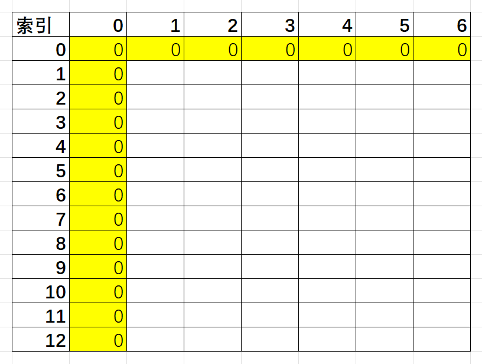
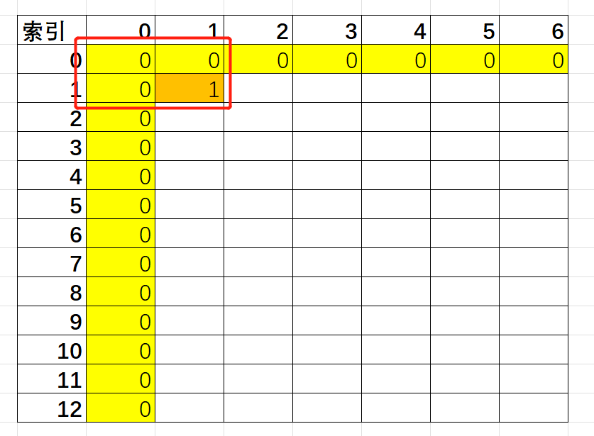
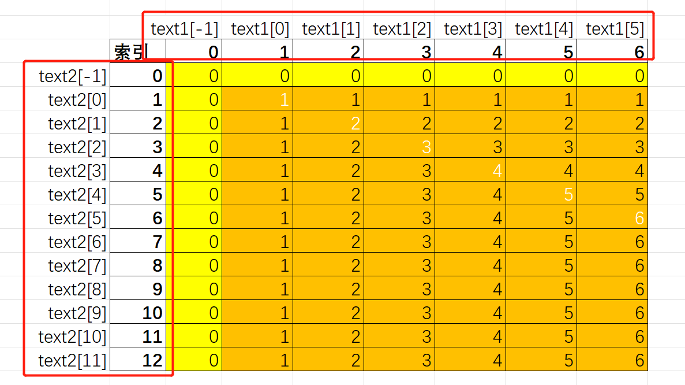

LeetCode 1143. 最长公共子序列¶

题解¶
这题能动态规划出来我是想不到的，我这脑回路也就能想到排列组合，然后穷举了。直接看题解，发现答案非常简单（才不）
1. 确认状态转移方程（其中same(a,b)，当两个字符串的第a位和第b位完全相同时为1，否则为0）¶
$$ dp[i][j]=max{dp[i-1][j-1]+same(i,j),dp[i-1][j],dp[i][j-1]} $$
2. 确定初始条件（索引从1开始）¶
$$ dp[1][1]=same(1,1) $$
3. 理解状态转移方程¶
3.1 这里额外引入最小字符串为空的概念，避免计算i-1索引出现负值问题，当索引i或者j为0的时候，其中一个子串长度为0，所以这里可以将它们直接初始化为0值，即dp[0][j] = 0或者dp[i][0] = 0¶

3.2 而且更主要的是，当计算dp[i][j]时，有三个值是需要提前确认的，即dp[i-1][j], dp[i][j-1], dp[i-1][j-1]¶

3.3 不管是横向按索引递增遍历，还是纵向按索引递增遍历，都能满足提前确认这三个值的条件dp[i-1][j], dp[i][j-1], dp[i-1][j-1]¶

3.4 观察发现，dp[i-1][j-1] + 1始终是大于等于dp[i-1][j]和dp[i][j-1]，即same(i, j) = 1的时候。（我这里假定这俩字符串是aaaaaa和aaaaaaaaaaaa，你也可以用其它字符串带入验证）¶

3.5 另外，dp[i][j-1]或者dp[i-1][j]也始终大于等于dp[i-1][j-1]¶

3.6 状态转移方程套用¶
int longestCommonSubsequence(string text1, string text2) {
vector<vector<int>> dp(text1.size() + 1, vector<int>(text2.size() + 1));
for (int i = 1; i <= text1.size(); i++) {
for (int j = 1; j <= text2.size(); j++) {
if (text1[i - 1] == text2[j - 1]) {
dp[i][j] = dp[i - 1][j - 1] + 1;
} else {
dp[i][j] = std::max(dp[i - 1][j], dp[i][j - 1]);
}
}
}
return dp[text1.size()][text2.size()];
}
3.7 迭代索引问题，两个for循环都是从1开始的好理解，因为索引为0的时候dp值是确定的0，但是为啥判断same(i,j)的时候，用的是if (text1[i - 1] == text2[j - 1])而不是if (text1[i] == text2[j])¶
由于前面引入了0长度子串辅助功能，i和j为0的时候，实际上计算的是text1[-1]和text2[-1]
这里索引下标实际上是dp数组的下标，所以映射到字符串索引时需要减一 
4. 完整代码¶
class Solution {
public:
static int longestCommonSubsequence(string text1, string text2) {
vector<vector<int>> dp(text1.size() + 1, vector<int>(text2.size() + 1));
for (int i = 1; i <= text1.size(); i++) {
for (int j = 1; j <= text2.size(); j++) {
if (text1[i - 1] == text2[j - 1]) {
dp[i][j] = dp[i - 1][j - 1] + 1;
} else {
dp[i][j] = std::max(dp[i - 1][j], dp[i][j - 1]);
}
}
}
return dp[text1.size()][text2.size()];
}
};
void Test() {
// 3
cout << Solution::longestCommonSubsequence("abcde", "ace") << endl;
// 3
cout << Solution::longestCommonSubsequence("abc", "abc") << endl;
// 0
cout << Solution::longestCommonSubsequence("abc", "def") << endl;
// 1
cout << Solution::longestCommonSubsequence("bl", "yby") << endl;
// 1
cout << Solution::longestCommonSubsequence("a", "aa") << endl;
}
参考¶
[1] Longest common subsequence https://en.wikipedia.org/wiki/Longest_common_subsequence
[2] 1143. 最长公共子序列 https://leetcode.cn/problems/longest-common-subsequence/